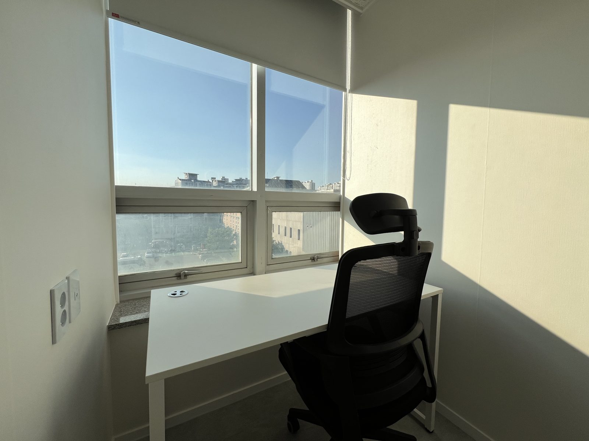

강일동 공유오피스, 집에서 걸어가는 사무실은 어디 있을까
강일동은 아파트 단지가 많고 상가 사무실은 적습니다. 그래서 강일리버파크나 고덕 쪽에 사는 1인 사업자가 "집 근처 사무실"을 검색하면 결과가 몇 개 안 나옵니다. 이 글은 강일동에서 사무 공간을 구하는 세 가지 방법을 월 비용과 계약 조건으로 비교한 것입니다.
1. 상가 사무실 임대
강일동 상가 소형 사무실은 보증금과 월세 외에 관리비, 인터넷, 냉난방비가 따로 붙습니다. 책상과 의자도 직접 사야 합니다. 계약은 보통 1년 이상이고, 사업이 안 풀려도 기간을 채워야 합니다. 혼자 일하는 사업자에게는 공간이 남고 비용은 넘칩니다.
2. 카페
처음 몇 달은 카페로 버틸 수 있습니다. 문제는 전화입니다. 상담 전화, 거래처 통화를 카페에서 받다 보면 자리를 옮기거나 밖으로 나가야 합니다. 하루 커피 두 잔이면 월 10만원이 넘고, 자리는 매번 다릅니다.
3. 공유오피스

공유오피스는 세 가지로 나뉩니다. 주소만 쓰는 비상주(월 2만원부터), 내 책상 하나를 쓰는 라운지 고정석(월 10만원부터), 문 닫히는 독립 사무실(1인실 월 27만원부터). 관리비·인터넷·냉난방이 월 요금에 포함되고, 월 단위로 시작할 수 있습니다. (모든 금액 부가세 별도)
정리하면, 통화가 많고 집중이 필요하면 1인실, 노트북 작업 위주면 고정석, 사업자등록 주소만 필요하면 비상주입니다.
운영자 입장에서 본 한 가지
공유오피스를 고를 때 요금표보다 먼저 볼 것은 "누가 관리하는가"입니다. 관리자가 상주하지 않는 곳은 우편물, 출입 문제, 계약 변경이 며칠씩 걸립니다. 운영자가 같은 건물에 있는지 계약 전에 물어보세요.
오피스워크넷 고덕강일점서울 강동구 강일동, 강일역 인근. 비상주 월 2만원~, 라운지 고정석 월 10만원~, 1인실 월 27만원~ (부가세 별도).
네이버 톡톡으로 묻기 요금표 보기
네이버 톡톡으로 묻기 요금표 보기